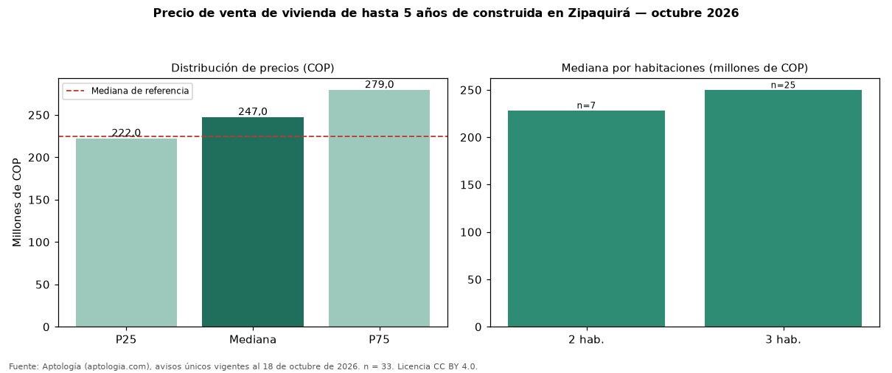

Precio de venta de vivienda de hasta 5 años de construida en Zipaquirá — octubre 2026
Con 33 avisos únicos, el precio mediano de vivienda de hasta 5 años de construida en venta en Zipaquirá es COP 247 millones. Frente a toda la oferta de venta en Zipaquirá (COP 225 millones), la diferencia es de 10 % por encima. Por metro cuadrado, la mediana es COP 4.346.667/m² (+10 % frente a COP 3.942.671/m²), puesto 7 de 11 ciudades comparables. Por habitaciones: 2 habitaciones, COP 228 millones (n = 7); 3 habitaciones, COP 250 millones (n = 25). El área mediana es 59 m² (referencia: 59 m²). El estrato más frecuente es 3. El rango intercuartílico va de COP 222 millones a COP 279 millones (razón 1,3). Datos abiertos CC BY 4.0 de Aptología; fuente y búsqueda de inmuebles: https://www.aptologia.com/venta/zipaquira. Archivos: PDF de 2 páginas, CSV con las cifras y gráfica PNG.

| Avisos únicos | 33 |
|---|---|
| Percentil 25 | COP 222.000.000 |
| Mediana | COP 247.000.000 |
| Percentil 75 | COP 279.000.000 |
| Mediana por m² | COP 4.346.666 |
Fuente: avisos vigentes de portales inmobiliarios recopilados por Aptología, deduplicados (mínimo 30 avisos únicos por celda). Precios pedidos, no cerrados. Fecha: 2026-10-18.